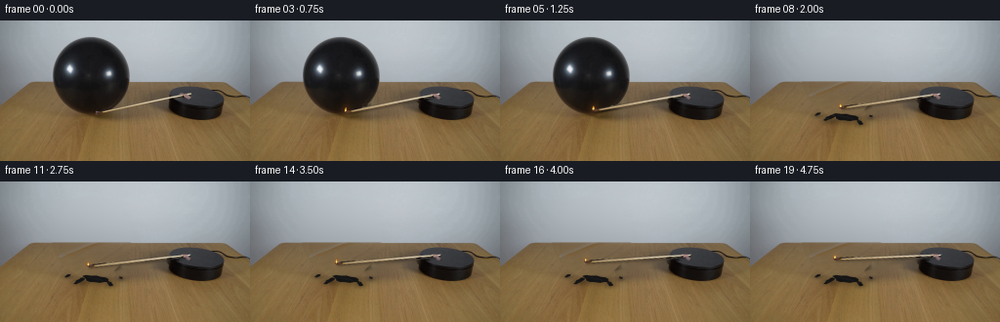
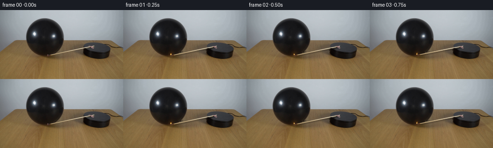

CODING AGENTS AS PIXEL WORLD MODELS
traex/GPT-6.1-Sol · 0113
点击播放 · 原生 RGB 像素
逐轮保存的候选
回放视频、检查图与代码变化。
每份候选均可单独播放。实际图片检查记录在下方工具轨迹中。
候选 01播放与检查图
点击播放 · 原生 RGB 像素

展开代码变化
--- 上一保存版本
+++ 本次保存版本
@@ -0,0 +1,211 @@
+from pathlib import Path
+import numpy as np
+from PIL import Image, ImageDraw, ImageFilter
+import cv2
+from scipy.ndimage import gaussian_filter, binary_fill_holes, binary_dilation, label
+import artifact_io
+
+ROOT=Path(__file__).resolve().parent
+H,W=144,256
+Y,X=np.mgrid[:H,:W].astype(float)
+S=4
+
+def smoothstep(a,b,x):
+ q=np.clip((x-a)/(b-a),0,1)
+ return q*q*(3-2*q)
+
+def composite(back,col,alpha):
+ return back*(1-alpha[...,None])+col*alpha[...,None]
+
+def resize(a):
+ return cv2.resize(a,(W,H),interpolation=cv2.INTER_AREA)
+
+def path_layer(points, fill, width=None, blur=0):
+ im=Image.new('RGBA',(W*S,H*S))
+ d=ImageDraw.Draw(im)
+ p=[(round(x*S),round(y*S)) for x,y in points]
+ if width is None:d.polygon(p,fill=fill)
+ else:d.line(p,fill=fill,width=round(width*S),joint='curve')
+ if blur: im=im.filter(ImageFilter.GaussianBlur(blur*S))
+ a=np.array(im).astype(float)/255
+ aa=resize(a[:,:,3]); c=resize(a[:,:,:3]*a[:,:,3:])
+ return c*255,aa
+
+def add_path(out,points,fill,width=None,blur=0):
+ p,a=path_layer(points,fill,width,blur)
+ return out*(1-a[:,:,None])+p
+
+
+def make_background(original,rodmask):
+ # Recover the tiny moving arm's occluded strip with a local, classical inpaint.
+ clean=cv2.inpaint(original,rodmask,3,cv2.INPAINT_TELEA).astype(float)
+ # Segment the silhouette from numeric brightness. The two specular reflections
+ # are interior holes, not gaps in the balloon.
+ m=(original.mean(2)<np.where(Y<62,145,78))&(X>51)&(X<135)&(Y>14)&(Y<96)
+ lab,n=label(m); areas=np.bincount(lab.ravel());areas[0]=0
+ m=binary_fill_holes(lab==areas.argmax())
+ m[62,:54]=False
+ # Include antialiasing, the knot, and the contact shadow.
+ mask=binary_dilation(m,iterations=2).astype(float)
+ mask=np.maximum(mask, np.exp(-(((X-99)/23)**2+((Y-96)/5)**2)/2)*.95)
+ mask[100:]*=np.exp(-(Y[100:]-100)**2/20)
+ mask=gaussian_filter(mask,.55)
+
+ # The back wall is a smooth, subtly vignetted photographed surface.
+ # Estimate it only from the surrounding visible wall, with a polynomial.
+ xx=(X-100)/100; yy=(Y-30)/40
+ terms=[np.ones_like(X),xx,yy,xx**2,xx*yy,yy**2,xx**3,xx**2*yy,xx*yy**2,yy**3,xx**4]
+ F=np.stack(terms,-1)
+ sel=(Y<62)&(X>26)&(X<181)&(~binary_dilation(m,iterations=5))
+ beta=np.linalg.lstsq(F[sel],original[sel].astype(float),rcond=None)[0]
+ wall=F@beta
+ # Recover the table's horizontal grain and color from its visible flanks.
+ wood=np.zeros_like(clean)
+ for y in range(62,H):
+ l=np.median(clean[y,32:51],axis=0)
+ r=np.median(clean[y,136:153],axis=0)
+ # Avoid baked-in illumination from the original arm and nearby platform.
+ if 74<=y<=90:
+ r=.65*r+.35*np.median(clean[y,126:139],axis=0)
+ q=np.clip((np.arange(W)-46)/97,0,1)
+ wood[y]=l[None,:]*(1-q[:,None])+r[None,:]*q[:,None]
+ tex=clean[y,12:51]-cv2.GaussianBlur(clean[y:y+1,12:51].astype(np.float32),(15,1),4)[0]
+ # A small amount of the original wood grain survives in the revealed area.
+ k=((np.arange(W)*.53+7).astype(int)%len(tex))
+ wood[y]+=tex[k]*.72
+ # Original tabletop horizon, between y=62 and y=63.
+ wall[62]=.45*wall[62]+.55*wood[63]
+ restored=wall.copy();restored[63:]=wood[63:]
+ bare=composite(clean,restored,mask)
+ return clean,bare,m,mask
+
+
+def add_flame(out,tip,i,strength=1):
+ # Gravity keeps the flame vertical while the wooden arm rotates in plan.
+ x,y=tip
+ h=(4.8+.65*np.sin(i*2.3)+.45*np.sin(i*4.1))*strength
+ w=(1.30+.23*np.sin(i*1.8))*strength
+ lean=.5*np.sin(i*2.71)
+ # Very restrained orange illumination, not a fireball.
+ glow=np.exp(-(((X-x)/3.3)**2+((Y-(y-1.8))/4.0)**2)/2)*.12*strength
+ out=composite(out,np.broadcast_to(np.array([235.,136.,39.]),out.shape),glow)
+ outline=[(x-.9*w,y+.3),(x-1.15*w,y-1.4),(x-.85*w,y-2.7),
+ (x+lean-.22,y-h),(x+lean+.4,y-h+1.0),(x+.95*w,y-2.2),(x+.85*w,y-.7)]
+ out=add_path(out,outline,(246,135,28,190),blur=.16)
+ inner=[(x-.55*w,y),(x-.7*w,y-1.25),(x+lean*.4,y-h*.80),(x+.52*w,y-1.8),(x+.56*w,y-.4)]
+ out=add_path(out,inner,(255,216,96,244),blur=.12)
+ core=[(x-.30,y),(x-.35,y-1.2),(x+.10,y-2.25),(x+.45,y-.55)]
+ out=add_path(out,core,(255,243,193,240),blur=.10)
+ return out
+
+
+def draw_arm(out,original,theta,i,clean):
+ pivot=np.array([193.,76.])
+ s=.36
+ A=np.array([[np.cos(theta),-np.sin(theta)/s],[s*np.sin(theta),np.cos(theta)]])
+ # Preserve the wood's photographed color and length under planar rotation.
+ p0=np.array([100.,94.]);p1=np.array([193.,75.2])
+ v=p1-p0;L=np.linalg.norm(v);v/=L
+ u=(X-p0[0])*v[0]+(Y-p0[1])*v[1]
+ n=-(X-p0[0])*v[1]+(Y-p0[1])*v[0]
+ alpha=(1-smoothstep(1.05,2.15,np.abs(n)))*smoothstep(-1.8,.3,u)*(1-smoothstep(L-.7,L+1.5,u))
+ source=original.astype(float)
+ # The outermost original pixels contain a little table background; removing
+ # that contribution prevents a bright edge being pasted onto the balloon.
+ fg=np.clip((source-clean*(1-alpha[...,None]))/np.maximum(alpha[...,None],.12),0,255)
+ premul=fg*alpha[...,None]
+ M=np.column_stack([A,pivot-A@pivot])
+ aa=cv2.warpAffine(alpha.astype(np.float32),M,(W,H),flags=cv2.INTER_CUBIC)
+ pp=cv2.warpAffine(premul.astype(np.float32),M,(W,H),flags=cv2.INTER_CUBIC)
+ aa=np.clip(aa,0,1);pp=np.clip(pp,0,255)
+ # A delicate moving shadow of the elevated wooden arm.
+ shM=M.copy();shM[:,2]+=np.array([.4,1.8])
+ sha=cv2.warpAffine(alpha.astype(np.float32),shM,(W,H),flags=cv2.INTER_LINEAR)
+ sha=gaussian_filter(sha,.65)*.21
+ out*=1-sha[:,:,None]
+ out=out*(1-aa[:,:,None])+pp
+ tip=pivot+A@(np.array([99.,94.])-pivot)
+ # Burned match head at the free end.
+ d=pivot-tip;d/=np.linalg.norm(d)
+ normal=np.array([-d[1],d[0]])
+ center=tip+.1*d
+ q=[]
+ for a in np.linspace(0,2*np.pi,24):
+ q.append(tuple(center+1.6*np.cos(a)*d+.88*np.sin(a)*normal))
+ out=add_path(out,q,(69,36,21,245),blur=.13)
+ out=add_path(out,[tuple(tip-.4*d),tuple(tip+.7*d)],(176,68,25,180),width=.55,blur=.13)
+ # Stationary attachment on the top face, restored from the first photograph.
+ mount=np.clip(1-(((X-192.4)/3.6)**2+((Y-78.4)/2.7)**2),0,1)*.82
+ out=composite(out,original,mount)
+ return out,tip
+
+
+def debris(out,time):
+ # An overstretched rubber membrane retracts rapidly; no burning explosion.
+ # After recoil, its small pieces fall and come to rest on the tabletop.
+ rng=np.random.default_rng(321)
+ # Final locations and characteristic sizes of the folded latex.
+ pieces=[(97.7,99.8,13.0,3.5,.12),(81.4,101.5,6.0,2.0,-.5),
+ (112.5,104.6,4.4,1.9,.65),(69.4,96.5,3.2,1.2,-.4),
+ (123.8,98.5,2.0,1.0,.2)]
+ for j,(fx,fy,rx,ry,ang) in enumerate(pieces):
+ start=np.array([[98,72],[77,69],[116,64],[69,77],[125,82]])[j].astype(float)
+ flight=[.47,.62,.58,.44,.42][j]
+ p=min(time/flight,1)
+ # Fast initial recoil followed by gravitational fall, a small final bounce.
+ cx=start[0]*(1-p)+fx*p
+ cy=start[1]+(fy-start[1])*p*p
+ if time>flight and time<flight+.35:
+ cy-=1.4*np.sin((time-flight)/.35*np.pi)*np.exp(-4*(time-flight))
+ a=ang+(1-p)*(j+1)*1.7
+ c,s=np.cos(a),np.sin(a)
+ ry0=ry+(1-p)*(.9+rx*.2)
+ sh=np.exp(-(((X-cx)/(rx*.9+1))**2+((Y-fy-1)/(ry*.65+1))**2)/2)
+ out*=1-(sh*.22*p*p)[:,:,None]
+ points=[]
+ jitter=rng.uniform(.7,1.15,16)
+ for k,t in enumerate(np.linspace(0,2*np.pi,16,endpoint=False)):
+ dx=rx*np.cos(t)*jitter[k];dy=ry0*np.sin(t)*jitter[k]
+ points.append((cx+c*dx-s*dy,cy+s*dx+c*dy))
+ out=add_path(out,points,(20,19,20,255),blur=.18)
+ # Bent film catches the light as thin grey curved ridges.
+ for k in range(3 if j==0 else 1):
+ x1=-rx*.7+k*rx*.35
+ local=[(x1,-ry0*.4),(x1+rx*.30,-ry0*.05),(x1+rx*.60,ry0*.28)]
+ ridge=[(cx+c*dx-s*dy,cy+s*dx+c*dy) for dx,dy in local]
+ out=add_path(out,ridge,(57+k*5,54+k*5,53+k*5,140),width=.65,blur=.15)
+ return out
+
+
+def generate():
+ original=np.array(Image.open(ROOT/'first_frame.png').convert('RGB'))
+ mask=np.zeros((H,W),np.uint8)
+ cv2.line(mask,(100,94),(194,75),255,5,cv2.LINE_AA)
+ cv2.ellipse(mask,(100,94),(4,3),0,0,360,255,-1)
+ clean,bare,balloon,remove=make_background(original,mask)
+ frames=[original.copy()]
+ for i in range(1,20):
+ t=i/4
+ # Warm-up, then a steady clockwise sweep about the attachment point.
+ theta=np.deg2rad(max(0,t-.5)*5.6)
+ if i<6:
+ out=clean.copy()
+ else:
+ out=bare.copy()
+ out,tip=draw_arm(out,original,theta,i,clean)
+ if i<6:
+ # A warm localized reflection as the match approaches the membrane.
+ g=np.exp(-(((X-tip[0])/4.8)**2+((Y-tip[1]+3)/5.7)**2)/2)*.09
+ g*=balloon
+ out=composite(out,np.broadcast_to(np.array([158.,82.,34.]),out.shape),g)
+ else:
+ out=debris(out,t-1.5+.10)
+ out=add_flame(out,tip,i,.9 if i<6 else .8)
+ frames.append(np.clip(np.rint(out),0,255).astype(np.uint8))
+ frames=np.stack(frames)
+ assert np.array_equal(frames[0],original)
+ artifact_io.save(frames,ROOT)
+ return frames
+
+if __name__=='__main__':
+ generate()
候选 02播放与检查图
点击播放 · 原生 RGB 像素


展开代码变化
--- 上一保存版本
+++ 本次保存版本
@@ -69,12 +69,19 @@
r=.65*r+.35*np.median(clean[y,126:139],axis=0)
q=np.clip((np.arange(W)-46)/97,0,1)
wood[y]=l[None,:]*(1-q[:,None])+r[None,:]*q[:,None]
- tex=clean[y,12:51]-cv2.GaussianBlur(clean[y:y+1,12:51].astype(np.float32),(15,1),4)[0]
+ tex=clean[y,34:51]-cv2.GaussianBlur(clean[y:y+1,34:51].astype(np.float32),(11,1),3)[0]
# A small amount of the original wood grain survives in the revealed area.
k=((np.arange(W)*.53+7).astype(int)%len(tex))
wood[y]+=tex[k]*.72
# Original tabletop horizon, between y=62 and y=63.
- wall[62]=.45*wall[62]+.55*wood[63]
+ # Interpolate the photographed edge's partial coverage, rather than using
+ # a uniform seam: the tabletop is slightly oblique in this image.
+ for y in (62,63):
+ left=np.median(original[y,39:51].astype(float),axis=0)
+ right=np.median(original[y,136:153].astype(float),axis=0)
+ q=np.clip((np.arange(W)-46)/97,0,1)
+ wood[y]=left[None,:]*(1-q[:,None])+right[None,:]*q[:,None]
+ wall[62]=wood[62]
restored=wall.copy();restored[63:]=wood[63:]
bare=composite(clean,restored,mask)
return clean,bare,m,mask
@@ -145,12 +152,12 @@
# After recoil, its small pieces fall and come to rest on the tabletop.
rng=np.random.default_rng(321)
# Final locations and characteristic sizes of the folded latex.
- pieces=[(97.7,99.8,13.0,3.5,.12),(81.4,101.5,6.0,2.0,-.5),
+ pieces=[(97.7,99.8,11.5,2.9,.12),(81.4,101.5,5.0,1.8,-.5),
(112.5,104.6,4.4,1.9,.65),(69.4,96.5,3.2,1.2,-.4),
(123.8,98.5,2.0,1.0,.2)]
for j,(fx,fy,rx,ry,ang) in enumerate(pieces):
start=np.array([[98,72],[77,69],[116,64],[69,77],[125,82]])[j].astype(float)
- flight=[.47,.62,.58,.44,.42][j]
+ flight=[.37,.44,.43,.34,.32][j]
p=min(time/flight,1)
# Fast initial recoil followed by gravitational fall, a small final bounce.
cx=start[0]*(1-p)+fx*p
@@ -159,7 +166,7 @@
cy-=1.4*np.sin((time-flight)/.35*np.pi)*np.exp(-4*(time-flight))
a=ang+(1-p)*(j+1)*1.7
c,s=np.cos(a),np.sin(a)
- ry0=ry+(1-p)*(.9+rx*.2)
+ ry0=ry+(1-p)*(.9+rx*.10)
sh=np.exp(-(((X-cx)/(rx*.9+1))**2+((Y-fy-1)/(ry*.65+1))**2)/2)
out*=1-(sh*.22*p*p)[:,:,None]
points=[]
@@ -199,7 +206,7 @@
g*=balloon
out=composite(out,np.broadcast_to(np.array([158.,82.,34.]),out.shape),g)
else:
- out=debris(out,t-1.5+.10)
+ out=debris(out,t-1.5+.18)
out=add_flame(out,tip,i,.9 if i<6 else .8)
frames.append(np.clip(np.rint(out),0,255).astype(np.uint8))
frames=np.stack(frames)
候选 03播放与检查图
可观测工具轨迹
实际执行的命令与返回图片。
命令 1exit 0
/bin/bash -lc "ls -la && cat prompt.txt && printf '\\n---RULES---\\n' && cat GENERATION_RULES.md"
命令 2exit 0
/bin/bash -lc "cat artifact_io.py && python - <<'PY'
from PIL import Image
import numpy as np
im=np.array(Image.open('first_frame.png'))
print(im.shape)
print(im.min(axis=(0,1)),im.max(axis=(0,1)))
# color/luminance character map 128x72
im=np.array(Image.fromarray(im).resize((128,72)))
for row in im:
print(''.join(' ' if p.mean()>220 else '.' if p.mean()>180 else ':' if p.mean()>140 else '-' if p.mean()>105 else '=' if p.mean()>75 else '+' if p.mean()>50 else '*' if p.mean()>30 else '#' if p.mean()>15 else '@' for p in row))
PY"命令 3exit 0
/bin/bash -lc "python - <<'PY'
from PIL import Image
import numpy as np
im=np.array(Image.open('first_frame.png'))
# full res crop actual luminance for rod / platform: region (95,65)-(235,105)
rgb=im[65:105,95:235]; val=rgb.mean(2)
print(' '+''.join(str((95+i)//10%10) for i in range(140)))
print(' '+''.join(str((95+i)%10) for i in range(140)))
for y,row in enumerate(val,65):
print(f'{y:3d} '+''.join(' ' if p>220 else '.' if p>185 else ':' if p>150 else '-' if p>120 else '=' if p>95 else '+' if p>75 else '*' if p>55 else '#' if p>35 else '%' if p>20 else '@' for p in row))
print('\\nSAMPLES')
for y in [66,70,74,78,82,86,90,94,98,102]:
print(y,[(x,im[y,x].tolist()) for x in range(102,222,4)])
# detect yellow/saturated flame pixels
r,g,b=im.transpose(2,0,1).astype(float)
m=(r-b>30)&(r>130)&(g>85)
ys,xs=np.where(m)
print('warm pixel bbox',xs.min(),xs.max(),ys.min(),ys.max())
from scipy.ndimage import label,find_objects
lab,n=label(m)
for s in find_objects(lab):
if s is not None and m[s].sum()>2: print(s,m[s].sum())
PY"命令 4exit 0
/bin/bash -lc "python - <<'PY'
from PIL import Image
import numpy as np
im=np.array(Image.open('first_frame.png'))
# exact ASCII classify colors crop
chars='0123456789ABCDEFGHIJKLMNOPQRSTUVWXYZabcdefghijklmnopqrstuvwxyz'
for y in range(69,100):
print(f'{y:3d} '+''.join(' ' if np.mean(p)>115 else 'W' if p[0]>160 and p[0]-p[2]>25 else 'r' if p[0]>p[1]*1.22 and p[0]>p[2]*1.3 else '.' if np.mean(p)>80 else '-' if np.mean(p)>60 else '+' if np.mean(p)>40 else '#' if np.mean(p)>25 else '@' for p in im[y,95:204]))
print('tip area')
for y in range(85,99):
print(y,[(x,im[y,x].tolist()) for x in range(95,115)])
PY"命令 5exit 0
/bin/bash -lc "python - <<'PY'
from PIL import Image
import numpy as np
im=np.array(Image.open('first_frame.png'))
# print lower balloon at full res
for y in range(80,104):
print(f'{y:3} '+''.join(' ' if p.mean()>120 else '.' if p.mean()>100 else '-' if p.mean()>80 else '=' if p.mean()>65 else '+' if p.mean()>50 else '*' if p.mean()>35 else '#' if p.mean()>23 else '@' for p in im[y,50:135]))
# shaft isolated brightness, segment pixel centers
for y in range(70,99):
xs=np.where(im[y,:,0]>150)[0];xs=xs[(xs>90)&(xs<205)]
print(y,xs.tolist())
PY"命令 6exit 0
/bin/bash -lc "python - <<'PY'
import numpy as np
from PIL import Image
im=np.array(Image.open('first_frame.png'))
for y in range(0,100,3):
# dark background separating balloon - dynamic threshold
r=im[y].mean(1)
ids=np.where((r<85 if y<63 else r<62)&(np.arange(256)>45)&(np.arange(256)<138))[0]
print(y, (ids.min(),ids.max()) if len(ids)>0 else None)
print('BACKGROUND wall')
for y in [0,15,30,45,57,60,61,62,63,64,65,70,80,90,100,110,130]:
print(y,[(x,im[y,x].tolist()) for x in [25,40,48,55,60,70,80,90,100,110,120,130,135,140,150,160,165,240]])
PY"命令 7exit 0
/bin/bash -lc "python - <<'PY' import importlib.util for p in ['cv2','scipy','numpy','PIL']: print(p,bool(importlib.util.find_spec(p))) PY"
命令 8exit 0
/bin/bash -lc "python - <<'PY'
from PIL import Image
import numpy as np
from scipy import ndimage
im=np.array(Image.open('first_frame.png')).astype(float)
Y,X=np.mgrid[:144,:256]
m=(im.mean(2)<np.where(Y<63,147,75))&(X>50)&(X<135)&(Y>12)&(Y<96)
m=ndimage.binary_fill_holes(m)
lab,n=ndimage.label(m)
areas=np.bincount(lab.ravel());areas[0]=0;m=lab==areas.argmax()
for y in range(13,99):
xs=np.where(m[y])[0]
if len(xs):print(y,xs.min(),xs.max())
PY"命令 9exit 0
/bin/bash -lc "cat > generate.py <<'PY'
from pathlib import Path
import numpy as np
from PIL import Image, ImageDraw, ImageFilter
import cv2
from scipy.ndimage import gaussian_filter, binary_fill_holes, binary_dilation, label
import artifact_io
ROOT=Path(__file__).resolve().parent
H,W=144,256
Y,X=np.mgrid[:H,:W].astype(float)
S=4
def smoothstep(a,b,x):
q=np.clip((x-a)/(b-a),0,1)
return q*q*(3-2*q)
def composite(back,col,alpha):
return back*(1-alpha[...,None])+col*alpha[...,None]
def resize(a):
return cv2.resize(a,(W,H),interpolation=cv2.INTER_AREA)
def path_layer(points, fill, width=None, blur=0):
im=Image.new('RGBA',(W*S,H*S))
d=ImageDraw.Draw(im)
p=[(round(x*S),round(y*S)) for x,y in points]
if width is None:d.polygon(p,fill=fill)
else:d.line(p,fill=fill,width=round(width*S),joint='curve')
if blur: im=im.filter(ImageFilter.GaussianBlur(blur*S))
a=np.array(im).astype(float)/255
aa=resize(a[:,:,3]); c=resize(a[:,:,:3]*a[:,:,3:])
return c*255,aa
def add_path(out,points,fill,width=None,blur=0):
p,a=path_layer(points,fill,width,blur)
return out*(1-a[:,:,None])+p
def make_background(original,rodmask):
# Recover the tiny moving arm's occluded strip with a local, classical inpaint.
clean=cv2.inpaint(original,rodmask,3,cv2.INPAINT_TELEA).astype(float)
# Segment the silhouette from numeric brightness. The two specular reflections
# are interior holes, not gaps in the balloon.
m=(original.mean(2)<np.where(Y<62,145,78))&(X>51)&(X<135)&(Y>14)&(Y<96)
lab,n=label(m); areas=np.bincount(lab.ravel());areas[0]=0
m=binary_fill_holes(lab==areas.argmax())
m[62,:54]=False
# Include antialiasing, the knot, and the contact shadow.
mask=binary_dilation(m,iterations=2).astype(float)
mask=np.maximum(mask, np.exp(-(((X-99)/23)**2+((Y-96)/5)**2)/2)*.95)
mask[100:]*=np.exp(-(Y[100:]-100)**2/20)
mask=gaussian_filter(mask,.55)
# The back wall is a smooth, subtly vignetted photographed surface.
# Estimate it only from the surrounding visible wall, with a polynomial.
xx=(X-100)/100; yy=(Y-30)/40
terms=[np.ones_like(X),xx,yy,xx**2,xx*yy,yy**2,xx**3,xx**2*yy,xx*yy**2,yy**3,xx**4]
F=np.stack(terms,-1)
sel=(Y<62)&(X>26)&(X<181)&(~binary_dilation(m,iterations=5))
beta=np.linalg.lstsq(F[sel],original[sel].astype(float),rcond=None)[0]
wall=F@beta
# Recover the table's horizontal grain and color from its visible flanks.
wood=np.zeros_like(clean)
for y in range(62,H):
l=np.median(clean[y,32:51],axis=0)
r=np.median(clean[y,136:153],axis=0)
# Avoid baked-in illumination from the original arm and nearby platform.
if 74<=y<=90:
r=.65*r+.35*np.median(clean[y,126:139],axis=0)
q=np.clip((np.arange(W)-46)/97,0,1)
wood[y]=l[None,:]*(1-q[:,None])+r[None,:]*q[:,None]
tex=clean[y,12:51]-cv2.GaussianBlur(clean[y:y+1,12:51].astype(np.float32),(15,1),4)[0]
# A small amount of the original wood grain survives in the revealed area.
k=((np.arange(W)*.53+7).astype(int)%len(tex))
wood[y]+=tex[k]*.72
# Original tabletop horizon, between y=62 and y=63.
wall[62]=.45*wall[62]+.55*wood[63]
restored=wall.copy();restored[63:]=wood[63:]
bare=composite(clean,restored,mask)
return clean,bare,m,mask
def add_flame(out,tip,i,strength=1):
# Gravity keeps the flame vertical while the wooden arm rotates in plan.
x,y=tip
h=(4.8+.65*np.sin(i*2.3)+.45*np.sin(i*4.1))*strength
w=(1.30+.23*np.sin(i*1.8))*strength
lean=.5*np.sin(i*2.71)
# Very restrained orange illumination, not a fireball.
glow=np.exp(-(((X-x)/3.3)**2+((Y-(y-1.8))/4.0)**2)/2)*.12*strength
out=composite(out,np.broadcast_to(np.array([235.,136.,39.]),out.shape),glow)
outline=[(x-.9*w,y+.3),(x-1.15*w,y-1.4),(x-.85*w,y-2.7),
(x+lean-.22,y-h),(x+lean+.4,y-h+1.0),(x+.95*w,y-2.2),(x+.85*w,y-.7)]
out=add_path(out,outline,(246,135,28,190),blur=.16)
inner=[(x-.55*w,y),(x-.7*w,y-1.25),(x+lean*.4,y-h*.80),(x+.52*w,y-1.8),(x+.56*w,y-.4)]
out=add_path(out,inner,(255,216,96,244),blur=.12)
core=[(x-.30,y),(x-.35,y-1.2),(x+.10,y-2.25),(x+.45,y-.55)]
out=add_path(out,core,(255,243,193,240),blur=.10)
return out
def draw_arm(out,original,theta,i,clean):
pivot=np.array([193.,76.])
s=.36
A=np.array([[np.cos(theta),-np.sin(theta)/s],[s*np.sin(theta),np.cos(theta)]])
# Preserve the wood's photographed color and length under planar rotation.
p0=np.array([100.,94.]);p1=np.array([193.,75.2])
v=p1-p0;L=np.linalg.norm(v);v/=L
u=(X-p0[0])*v[0]+(Y-p0[1])*v[1]
n=-(X-p0[0])*v[1]+(Y-p0[1])*v[0]
alpha=(1-smoothstep(1.05,2.15,np.abs(n)))*smoothstep(-1.8,.3,u)*(1-smoothstep(L-.7,L+1.5,u))
source=original.astype(float)
# The outermost original pixels contain a little table background; removing
# that contribution prevents a bright edge being pasted onto the balloon.
fg=np.clip((source-clean*(1-alpha[...,None]))/np.maximum(alpha[...,None],.12),0,255)
premul=fg*alpha[...,None]
M=np.column_stack([A,pivot-A@pivot])
aa=cv2.warpAffine(alpha.astype(np.float32),M,(W,H),flags=cv2.INTER_CUBIC)
pp=cv2.warpAffine(premul.astype(np.float32),M,(W,H),flags=cv2.INTER_CUBIC)
aa=np.clip(aa,0,1);pp=np.clip(pp,0,255)
# A delicate moving shadow of the elevated wooden arm.
shM=M.copy();shM[:,2]+=np.array([.4,1.8])
sha=cv2.warpAffine(alpha.astype(np.float32),shM,(W,H),flags=cv2.INTER_LINEAR)
sha=gaussian_filter(sha,.65)*.21
out*=1-sha[:,:,None]
out=out*(1-aa[:,:,None])+pp
tip=pivot+A@(np.array([99.,94.])-pivot)
# Burned match head at the free end.
d=pivot-tip;d/=np.linalg.norm(d)
normal=np.array([-d[1],d[0]])
center=tip+.1*d
q=[]
for a in np.linspace(0,2*np.pi,24):
q.append(tuple(center+1.6*np.cos(a)*d+.88*np.sin(a)*normal))
out=add_path(out,q,(69,36,21,245),blur=.13)
out=add_path(out,[tuple(tip-.4*d),tuple(tip+.7*d)],(176,68,25,180),width=.55,blur=.13)
# Stationary attachment on the top face, restored from the first photograph.
mount=np.clip(1-(((X-192.4)/3.6)**2+((Y-78.4)/2.7)**2),0,1)*.82
out=composite(out,original,mount)
return out,tip
def debris(out,time):
# An overstretched rubber membrane retracts rapidly; no burning explosion.
# After recoil, its small pieces fall and come to rest on the tabletop.
rng=np.random.default_rng(321)
# Final locations and characteristic sizes of the folded latex.
pieces=[(97.7,99.8,13.0,3.5,.12),(81.4,101.5,6.0,2.0,-.5),
(112.5,104.6,4.4,1.9,.65),(69.4,96.5,3.2,1.2,-.4),
(123.8,98.5,2.0,1.0,.2)]
for j,(fx,fy,rx,ry,ang) in enumerate(pieces):
start=np.array([[98,72],[77,69],[116,64],[69,77],[125,82]])[j].astype(float)
flight=[.47,.62,.58,.44,.42][j]
p=min(time/flight,1)
# Fast initial recoil followed by gravitational fall, a small final bounce.
cx=start[0]*(1-p)+fx*p
cy=start[1]+(fy-start[1])*p*p
if time>flight and time<flight+.35:
cy-=1.4*np.sin((time-flight)/.35*np.pi)*np.exp(-4*(time-flight))
a=ang+(1-p)*(j+1)*1.7
c,s=np.cos(a),np.sin(a)
ry0=ry+(1-p)*(.9+rx*.2)
sh=np.exp(-(((X-cx)/(rx*.9+1))**2+((Y-fy-1)/(ry*.65+1))**2)/2)
out*=1-(sh*.22*p*p)[:,:,None]
points=[]
jitter=rng.uniform(.7,1.15,16)
for k,t in enumerate(np.linspace(0,2*np.pi,16,endpoint=False)):
dx=rx*np.cos(t)*jitter[k];dy=ry0*np.sin(t)*jitter[k]
points.append((cx+c*dx-s*dy,cy+s*dx+c*dy))
out=add_path(out,points,(20,19,20,255),blur=.18)
# Bent film catches the light as thin grey curved ridges.
for k in range(3 if j==0 else 1):
x1=-rx*.7+k*rx*.35
local=[(x1,-ry0*.4),(x1+rx*.30,-ry0*.05),(x1+rx*.60,ry0*.28)]
ridge=[(cx+c*dx-s*dy,cy+s*dx+c*dy) for dx,dy in local]
out=add_path(out,ridge,(57+k*5,54+k*5,53+k*5,140),width=.65,blur=.15)
return out
def generate():
original=np.array(Image.open(ROOT/'first_frame.png').convert('RGB'))
mask=np.zeros((H,W),np.uint8)
cv2.line(mask,(100,94),(194,75),255,5,cv2.LINE_AA)
cv2.ellipse(mask,(100,94),(4,3),0,0,360,255,-1)
clean,bare,balloon,remove=make_background(original,mask)
frames=[original.copy()]
for i in range(1,20):
t=i/4
# Warm-up, then a steady clockwise sweep about the attachment point.
theta=np.deg2rad(max(0,t-.5)*5.6)
if i<6:
out=clean.copy()
else:
out=bare.copy()
out,tip=draw_arm(out,original,theta,i,clean)
if i<6:
# A warm localized reflection as the match approaches the membrane.
g=np.exp(-(((X-tip[0])/4.8)**2+((Y-tip[1]+3)/5.7)**2)/2)*.09
g*=balloon
out=composite(out,np.broadcast_to(np.array([158.,82.,34.]),out.shape),g)
else:
out=debris(out,t-1.5+.10)
out=add_flame(out,tip,i,.9 if i<6 else .8)
frames.append(np.clip(np.rint(out),0,255).astype(np.uint8))
frames=np.stack(frames)
assert np.array_equal(frames[0],original)
artifact_io.save(frames,ROOT)
return frames
if __name__=='__main__':
generate()
PY
python generate.py"命令 10exit 0
/bin/bash -lc "python - <<'PY'
from PIL import Image
import numpy as np
for f in [1,5,6,8,19]:
im=np.array(Image.open(f'frames/{f:02d}.png'))
print('FRAME',f)
sm=np.array(Image.fromarray(im).resize((128,72)))
for row in sm[7:57]:
print(''.join(' ' if p.mean()>220 else '.' if p.mean()>180 else ':' if p.mean()>140 else '-' if p.mean()>105 else '=' if p.mean()>75 else '+' if p.mean()>50 else '*' if p.mean()>30 else '#' if p.mean()>15 else '@' for p in row[20:115]))
print('color samples',[im[y,x].tolist() for x,y in [(90,30),(90,60),(90,65),(90,75),(90,85),(105,90),(110,90),(100,94),(103,97)]])
PY"命令 11exit 0
/bin/bash -lc "python - <<'PY'
import generate as g
from PIL import Image
import numpy as np, cv2
im=np.array(Image.open('first_frame.png'));m=np.zeros((144,256),np.uint8);cv2.line(m,(100,94),(194,75),255,5,cv2.LINE_AA);cv2.ellipse(m,(100,94),(4,3),0,0,360,255,-1)
c,b,ball,r=g.make_background(im,m)
Image.fromarray(b.astype('uint8')).save('.tmp/background.png')
for y in range(59,70):
print(y,[(x,np.round(b[y,x]).astype(int).tolist(),round(r[y,x],2)) for x in range(50,139,8)])
for y in range(84,101):
print('clean',y,[(x,int(c[y,x].mean())) for x in range(86,116,2)])
PY"命令 12exit 0
/bin/bash -lc "python - <<'PY'
from PIL import Image
import numpy as np
im=np.array(Image.open('first_frame.png')).astype(int)
for i in [1,2,5,6,10,19]:
f=np.array(Image.open(f'frames/{i:02d}.png')).astype(int)
d=np.abs(f-im).max(2); ys,xs=np.where(d>10)
print(i,'different >10',len(xs),'bbox',(xs.min(),ys.min(),xs.max(),ys.max()),'MAE',np.abs(f-im).mean())
print('artifact',np.load('pixels.npz')['pixels'].shape)
PY"命令 13exit 0
/bin/bash -lc "python - <<'PY'
import numpy as np
from PIL import Image
im=np.array(Image.open('first_frame.png')).astype(float)
# compare the stationary shaft recreation to its source.
f=np.array(Image.open('frames/01.png')).astype(float)
for y in range(77,94,2):
x=round(193-(y-75.2)*93/18.8)
print(x,y,'orig',im[y,x].astype(int),'new',f[y,x].astype(int))
PY"命令 14exit 0
/bin/bash -lc "python - <<'PY'
from PIL import Image
import numpy as np
im=np.array(Image.open('first_frame.png'))
for y in range(60,65):
print(y,[(x,im[y,x].tolist()) for x in range(30,165,5)])
PY"命令 15exit 0
/bin/bash -lc "python generate.py && python - <<'PY'
from pathlib import Path
from PIL import Image
import numpy as np
f=np.stack([np.array(Image.open(p)) for p in sorted(Path('frames').glob('*.png'))])
assert f.shape==(20,144,256,3)
assert f.dtype==np.uint8
assert np.array_equal(f[0],np.array(Image.open('first_frame.png')))
print('Validated:',f.shape,f.dtype,'first frame exactly preserved')
PY
command -v ffmpeg || true"保存候选 3 份；完成命令 15 次；可验证图片返回 0 张。原始 API 响应与完整日志保留在本地。